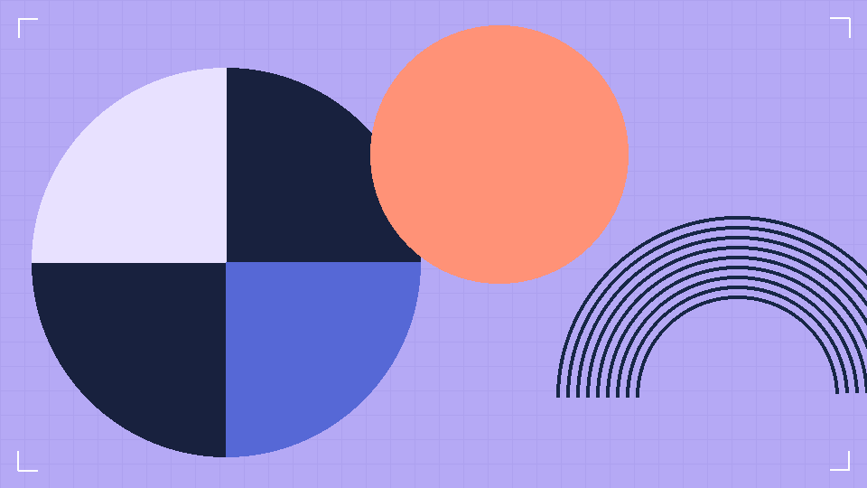
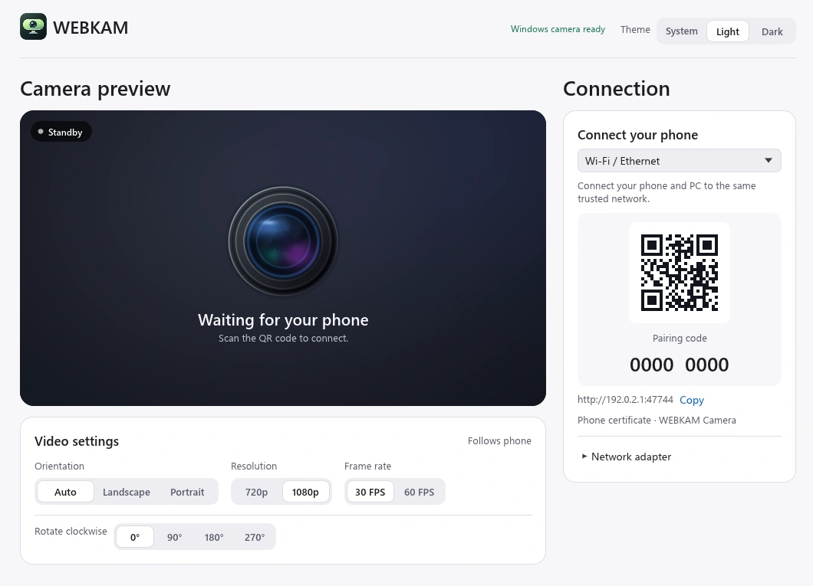

Take control of the shot.
Try the same resolution, frame rate, and rotation controls you get in the Windows receiver.
See the Windows app
WEBKAM
Demo feed

Use your iPhone or Android as a webcam in Discord, Zoom, and other Windows and Mac apps.


Try the camera controls, switch lenses, and walk through pairing with a sample feed.
Try the same resolution, frame rate, and rotation controls you get in the Windows receiver.
See the Windows app
See how the wide, standard, and close views change the sample. WEBKAM lists the lenses your phone makes available.
See the phone appChoose how your phone connects. Run through a sample pairing to see what happens on both devices.
See the pairing screenJoin the same network, then scan the QR code shown in WEBKAM.
Switch this sample between landscape and portrait. In the Windows app, Auto also follows your phone as you turn it.

Install WEBKAM on your Windows 11 PC. Open it and pick Wi-Fi or your phone’s USB connection.
Scan the QR on your PC or enter its address in the companion. On iPhone, Safari is required to download the WEBKAM profile. Open the setup link in Safari if it opens in another browser. Follow the setup prompts, enter the eight-digit code, then tap Start camera.
In Discord, open Voice & Video and choose WEBKAM (Windows Virtual Camera). Pick your microphone separately and keep the receiver open.
WEBKAM is free. Start with the receiver for your computer, then pair your phone.
Guided installer with the virtual camera and optional USB components.
Preview release with the bundled camera extension. Up to 1080p at 30 FPS.
Mac setup and checksumSigned APK with Wi-Fi, supported USB connections, and floating preview.
Hybrid companion. Personal signing is required. Native floating preview awaits a physical iPhone test.